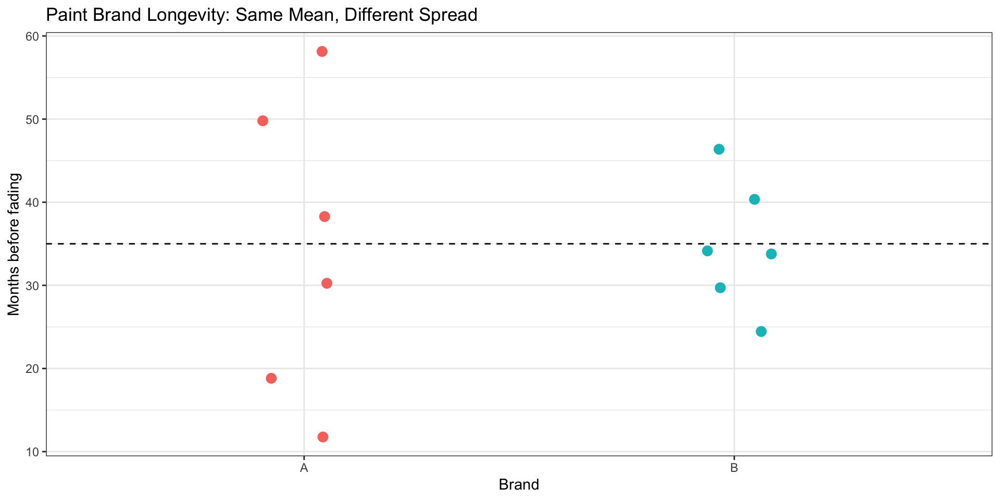
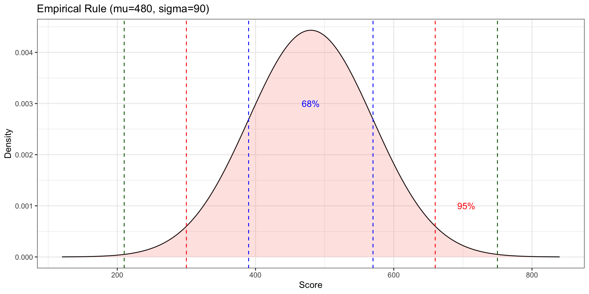
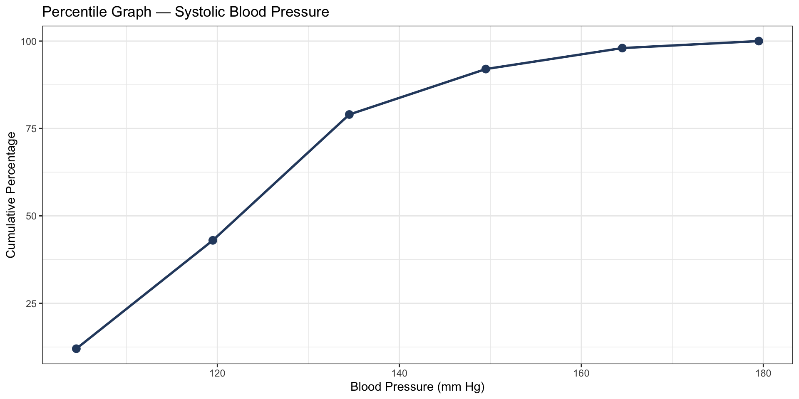
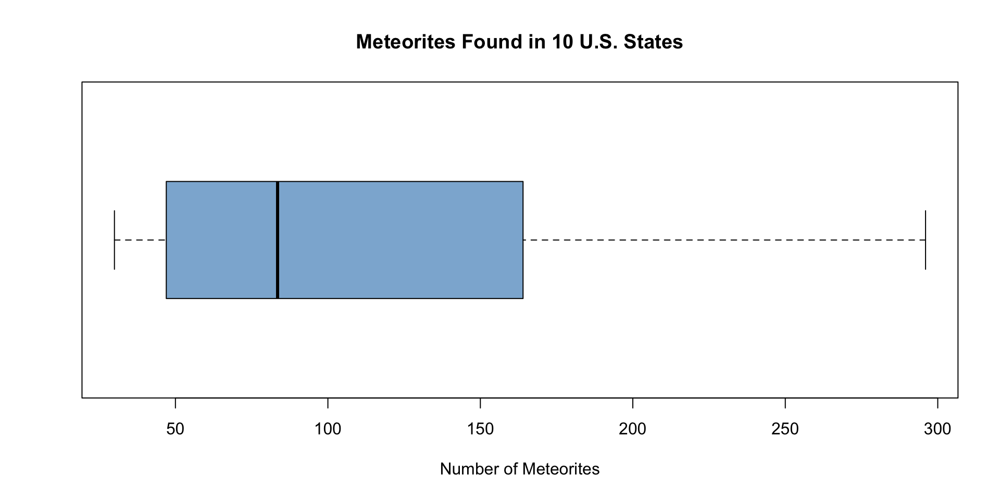
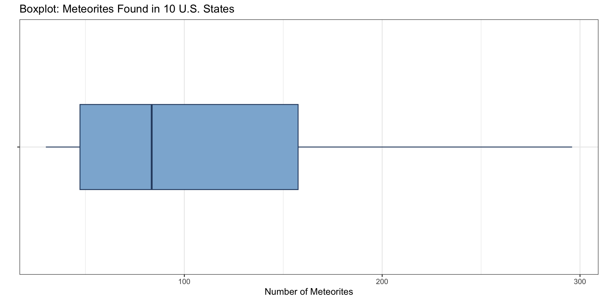
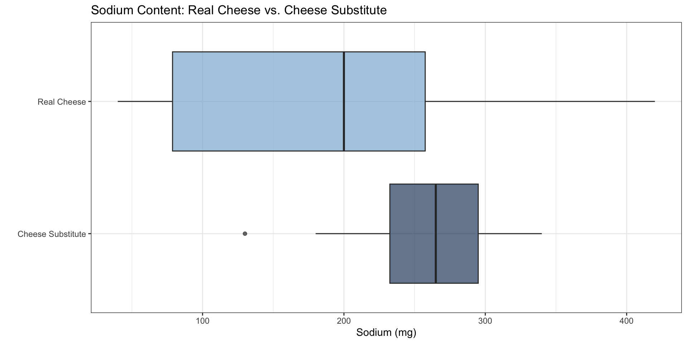

Sum of values: 169 Number of values: 6 Mean: 28.16667 Chapter 3: Data Description
Shih Chien University
2026-05-31
A measure of central tendency is a single numerical value that summarizes the center or “typical” value of a dataset. Rather than examining every individual observation, a central tendency statistic provides a concise snapshot of where data tend to cluster.
The four most widely used measures are:
Key Notation
| Symbol | Meaning |
|---|---|
| \(\bar{X}\) | Sample mean |
| \(\mu\) | Population mean |
| \(n\) | Sample size |
| \(N\) | Population size |
The mean is computed by summing all data values and dividing by the number of observations. It is the most commonly reported measure of center.
Formulas for the Mean
Sample mean: \[\bar{X} = \frac{\Sigma X}{n}\]
Population mean: \[\mu = \frac{\Sigma X}{N}\]
where \(\Sigma X\) is the sum of all data values and \(n\) (or \(N\)) is the count of values.
Rounding Rule
Round the mean to one more decimal place than appears in the original data.
Example 3-1
A survey of six countries found the following average number of days per year that workers receive as paid leave. Find the mean.
Days: 13, 15, 26, 36, 37, 42
Sum of values: 169 Number of values: 6 Mean: 28.16667 The mean number of paid days off is approximately 28.2 days.
Example 3-2
The number of hospital-acquired infections reported at a sample of hospitals over one year is listed below. Determine the mean.
Values: 62, 58, 71, 70, 69, 58, 51, 64, 66, 80
Mean number of infections: 64.9 Sum: 649 n: 10 The mean is 64.9 hospital-acquired infections.
When raw data are unavailable and only a frequency distribution is given, use the midpoint of each class to approximate the mean.
Formula — Mean for Grouped Data
\[\bar{X} = \frac{\Sigma f \cdot X_m}{n}\]
where \(f\) = class frequency, \(X_m\) = class midpoint, \(n = \Sigma f\).
Example 3-3
Twenty runners recorded the number of miles they ran during one week. Using the frequency distribution below, find the mean.
| Class | Frequency |
|---|---|
| 5.5–10.5 | 1 |
| 10.5–15.5 | 2 |
| 15.5–20.5 | 3 |
| 20.5–25.5 | 5 |
| 25.5–30.5 | 4 |
| 30.5–35.5 | 3 |
| 35.5–40.5 | 2 |
| Midpoint (Xm) | Frequency (f) | f · Xm |
|---|---|---|
| 8 | 1 | 8 |
| 13 | 2 | 26 |
| 18 | 3 | 54 |
| 23 | 5 | 115 |
| 28 | 4 | 112 |
| 33 | 3 | 99 |
| 38 | 2 | 76 |
The median is the value that sits at the exact center of an ordered dataset, dividing it into two equal halves. It is resistant to the influence of extreme values.
Finding the Median
Example 3-4
The number of rooms in the seven hotels in a downtown district are listed below. Find the median.
Rooms: 713, 300, 618, 595, 311, 401, 292
Sorted: 292 300 311 401 595 618 713 Median position: 4 Median: 401 With 7 values (odd), the median is the 4th value when sorted: 401 rooms.
Example 3-5
The entrance fees (in dollars) for a random sample of national parks are: 25, 10, 8, 15, 5, 12, 14, 3. Find the median.
Sorted: 3 5 8 10 12 14 15 25 n = 8 (even) → average of positions 4 and 5 Median: 11 With 8 values (even), the median is the average of the 4th and 5th sorted values: \(\frac{10+12}{2}\) = $11.
Example 3-6 & 3-7 — Tornadoes & Asthma Cases
The number of tornadoes reported in 12 U.S. states during a recent year: 188, 967, 990, 1133, 630, 604, 294, 584, 276, 250, 451, 810
Hospital emergency visits for asthma across 10 cities: 345, 243, 111, 144, 280, 300, 213, 201, 403, 201
Tornadoes — sorted: 188, 250, 276, 294, 451, 584, 604, 630, 810, 967, 990, 1133 Tornadoes median: 594 Asthma — sorted: 111, 144, 201, 201, 213, 243, 280, 300, 345, 403 Asthma median: 228 Example 3-8
Six randomly selected bookstores reported selling this many magazines per week: 3, 7, 8, 3, 1, 3. Find the median.
Sorted: 1 3 3 3 7 8 Median: 3 The median is 3 magazines per week.
The mode is the value that appears most frequently in a dataset. Unlike the mean and median, the mode can be used with both quantitative and qualitative data.
Key Properties of the Mode
Example 3-9
The signing bonuses (in millions of dollars) for a sample of NFL players are listed. Find the mode.
Values: 18, 14, 10, 10, 10, 7, 7, 3, 2, 2, 2, 8
bonuses
2 10 7 3 8 14 18
3 3 2 1 1 1 1 Mode: $ 2 millionBoth 2 and 10 appear 3 times → dataset is bimodal: $2M and $10M.
Example 3-10 & 3-11 — No Mode & Bimodal
Bank branches in 5 cities: 17, 23, 25, 3, 42 — each value appears exactly once → no mode.
Licensed nuclear reactors in the U.S. over 15 years: 104, 104, 104, 104, 104, 107, 109, 109, 109, 110, 109, 111, 112, 111, 109
reactors
104 109 111 107 110 112
5 5 2 1 1 1 104 appears 5 times and 109 appears 6 times → bimodal: 104 and 109.
Example 3-12
Find the modal class for the miles-run-per-week frequency distribution (Example 3-3).
| Class | Frequency |
|---|---|
| 5.5-10.5 | 1 |
| 10.5-15.5 | 2 |
| 15.5-20.5 | 3 |
| 20.5-25.5 | 5 |
| 25.5-30.5 | 4 |
| 30.5-35.5 | 3 |
| 35.5-40.5 | 2 |
Modal class: 20.5-25.5 (frequency = 5 )The modal class is 20.5–25.5 miles, with the highest frequency of 5.
Example 3-13
A survey recorded boat registrations (in thousands) for five Pennsylvania counties: Westmoreland: 11,008 | Butler: 9,147 | Allegheny: 5,765 | Beaver: 3,342 | Lawrence: 1,478
| County | Registrations |
|---|---|
| Westmoreland | 11008 |
| Butler | 9147 |
| Allegheny | 5765 |
| Beaver | 3342 |
| Lawrence | 1478 |
Mode (highest registrations): Westmoreland with 11008 registrationsExample 3-14
Six employees’ salaries at a small firm: $5,000 | $6,000 | $9,000 | $12,000 | $15,000 | $45,000
Which measure best represents this dataset?
Mean: $ 15333.33 Median: $ 10500 Mode: No mode (all values unique)The mean ($15,333) is inflated by the $45,000 outlier. The median ($10,500) better represents the typical salary.
When Outliers Are Present
Use the median when a dataset contains extreme values, as the mean is strongly pulled in the direction of the outlier.
The midrange is the arithmetic mean of the maximum and minimum data values. It is easy to calculate but highly sensitive to extreme values.
Formula — Midrange
\[MR = \frac{\text{lowest value} + \text{highest value}}{2}\]
Example 3-15 & 3-16: — Water-Line Breaks & NFL Signing Bonuses
The number of water-line breaks in a city over 9 years: 2, 3, 6, 8, 4, 1, 3, 5, 7. Find the midrange.
Using the data from Example 3-9 (min = $2M, max = $18M), find the midrange.
Water-line breaks midrange: 4.5 breaksNFL bonuses midrange: $ 10 millionWhen different values carry different levels of importance (weight), use the weighted mean to compute an accurate average.
Formula — Weighted Mean
\[\bar{X}_w = \frac{\Sigma w \cdot X}{\Sigma w}\]
where \(w\) = weight and \(X\) = value.
Example 3-17
A student earned the following grades. Compute the grade-point average (GPA), using credit hours as weights.
| Course | Grade | Credit Hours |
|---|---|---|
| English | A (4) | 3 |
| Math | C (2) | 4 |
| History | B (3) | 3 |
| Art | D (1) | 2 |
courses <- c("English", "Math", "History", "Art")
grades <- c(4, 2, 3, 1) # A=4, B=3, C=2, D=1
credits <- c(3, 4, 3, 2)
df_gpa <- data.frame(Course=courses, Grade=grades, Credits=credits) |>
mutate(w_X = Grade * Credits)
knitr::kable(df_gpa, col.names=c("Course","Grade Points","Credits","w × X"),
caption="GPA Calculation")| Course | Grade Points | Credits | w × X |
|---|---|---|---|
| English | 4 | 3 | 12 |
| Math | 2 | 4 | 8 |
| History | 3 | 3 | 9 |
| Art | 1 | 2 | 2 |
Weighted Mean (GPA): 2.58 The student’s GPA is 2.58.
Which Measure to Use?
| Situation | Best Measure |
|---|---|
| Most typical value desired | Mode |
| Distribution is open-ended (no max/min) | Median |
| Extreme values are present | Median |
| Data are categorical (nominal) | Mode |
| Further computations are needed | Mean |
| Data must be split into two equal groups | Median |
The mean is generally preferred when data are approximately symmetric with no extreme outliers, since it uses every data value in its computation.
Two datasets can have identical means yet differ dramatically in their spread. Measures of variation quantify how spread out or clustered data values are around the center.
Three Key Measures of Variation
| Measure | Symbol(s) | Description |
|---|---|---|
| Range | \(R\) | Distance between highest and lowest |
| Variance | \(\sigma^2\), \(s^2\) | Average squared distance from mean |
| Standard Deviation | \(\sigma\), \(s\) | Square root of variance |
Example 3-18
A testing laboratory evaluates two brands of outdoor paint to see how long (in months) each lasts before fading. Six cans of each brand were tested.
Brand A: 10, 60, 50, 30, 40, 20 — Mean = 35 months Brand B: 35, 45, 30, 35, 40, 25 — Mean = 35 months
data.frame(Brand = rep(c("A","B"), each=6),
Months = c(A, B)) |>
ggplot(aes(x = Brand, y = Months, color = Brand)) +
geom_jitter(size=3, width=0.1) +
geom_hline(yintercept=35, linetype="dashed") +
labs(title="Paint Brand Longevity: Same Mean, Different Spread",
y="Months before fading") +
theme_bw() + theme(legend.position="none")
The range is the simplest measure of spread — the difference between the largest and smallest values.
Formula — Range
\[R = \text{highest value} - \text{lowest value}\]
Limitation of the Range
A single extreme value can drastically inflate the range, making it a misleading indicator of typical variation.
Example 3-19
Find the range for Brand A and Brand B from Example 3-18.
Brand A range: 50 monthsBrand B range: 20 months
Brand B is more consistent: range is less than half of Brand A's range.Example 3-20
Find the range for the following salaries at XYZ Manufacturing Co.:
Owner: $100,000 | Manager: $40,000 | Sales rep: $30,000 | Workers: $25,000, $15,000, $18,000
Minimum salary: $ 15000 Maximum salary: $ 1e+05 Range: $ 85000 The range is $85,000 — heavily influenced by the owner’s salary.
The variance measures the average squared deviation of each value from the mean. The standard deviation is its square root, expressed in the original units.
Population Formulas
\[\sigma^2 = \frac{\Sigma(X - \mu)^2}{N} \qquad \sigma = \sqrt{\frac{\Sigma(X - \mu)^2}{N}}\]
Step-by-step procedure:
Example 3-21
Find the variance and standard deviation for Brand A paint data: 10, 60, 50, 30, 40, 20
| X | X - mu | (X-mu)^2 |
|---|---|---|
| 10 | -25 | 625 |
| 60 | 25 | 625 |
| 50 | 15 | 225 |
| 30 | -5 | 25 |
| 40 | 5 | 25 |
| 20 | -15 | 225 |
Example 3-22
Find the variance and standard deviation for Brand B: 35, 45, 30, 35, 40, 25
Variance (sigma^2): 41.7
Standard deviation (sigma): 6.5 months
Brand A sigma: 17.1 vs Brand B sigma: 6.5 → Brand B is more consistent.When data come from a sample (not the entire population), divide by \(n - 1\) rather than \(n\) to obtain an unbiased estimate of the population variance.
Sample Formulas
\[s^2 = \frac{\Sigma(X - \bar{X})^2}{n-1} \qquad s = \sqrt{\frac{\Sigma(X - \bar{X})^2}{n-1}}\]
Shortcut (computational) formulas:
\[s^2 = \frac{n(\Sigma X^2) - (\Sigma X)^2}{n(n-1)} \qquad s = \sqrt{\frac{n(\Sigma X^2) - (\Sigma X)^2}{n(n-1)}}\]
Why \(n-1\)?
Dividing by \(n-1\) corrects the tendency of sample variance to underestimate population variance. The value \(n-1\) is called the degrees of freedom.
Example 3-23
Find the sample variance and standard deviation for European auto sales (in billions of dollars) over 6 years: 11.2, 11.9, 12.0, 12.8, 13.4, 14.3
n = 6 Sum(X) = 75.6 Sum(X^2) = 958.94 s^2 = 1.276 s = 1.13 billion dollarsVerified with var(): 1.276 Example 3-24
Find the variance and standard deviation for the miles-run-per-week grouped data (Example 3-3), representing 20 runners.
| Xm | f | f·Xm | f·Xm² |
|---|---|---|---|
| 8 | 1 | 8 | 64 |
| 13 | 2 | 26 | 338 |
| 18 | 3 | 54 | 972 |
| 23 | 5 | 115 | 2645 |
| 28 | 4 | 112 | 3136 |
| 33 | 3 | 99 | 3267 |
| 38 | 2 | 76 | 2888 |
n = 20 Sum(f·Xm) = 490 Sum(f·Xm^2) = 13310
Variance s^2 = 68.7 Std Dev s = 8.3 milesThe coefficient of variation (CVar) expresses the standard deviation as a percentage of the mean, enabling comparison of variability across datasets with different units or different scales.
Formula — Coefficient of Variation
\[\text{CVar} = \frac{s}{\bar{X}} \times 100\% \quad \text{(samples)} \qquad \text{CVar} = \frac{\sigma}{\mu} \times 100\% \quad \text{(populations)}\]
Example 3-25
The mean number of car sales per 3-month period is 87 with a standard deviation of 5. The mean commission amount is $5,225 with a standard deviation of $773. Which is more variable?
CVar (sales): 5.7 %CVar (commissions): 14.8 %
Conclusion: Commissions are more variable (larger CVar).Example 3-26
For women’s fitness magazines: mean pages = 132, variance = 23; mean ads = 182, variance = 62. Which is more variable?
CVar (pages): 3.6 %CVar (ads): 4.3 %
Conclusion: Advertisements are more variable.The range rule of thumb provides a quick approximation of the standard deviation using only the range.
Range Rule of Thumb
\[s \approx \frac{\text{range}}{4}\]
Conversely, most data values fall within the interval: \[[\bar{X} - 2s, \; \bar{X} + 2s]\]
This approximation works best for unimodal, roughly symmetric distributions.
Chebyshev’s theorem provides a guaranteed lower bound on the proportion of data values that fall within \(k\) standard deviations of the mean — regardless of the distribution’s shape.
Chebyshev’s Theorem
The proportion of values from any data set that will fall within \(k\) standard deviations of the mean is at least:
\[1 - \frac{1}{k^2}, \quad k > 1\]
| \(k\) | Minimum % within \(k\) SDs |
|---|---|
| 2 | At least 75% |
| 3 | At least 88.89% |
| 2.5 | At least 84% |
Example 3-27
The mean price of homes in a neighborhood is $50,000 and the standard deviation is $10,000. Find the price range in which at least 75% of homes will sell.
k = 2 → at least 75 % of valuesPrice range: $ 30000 to $ 70000 At least 75% of homes will sell between $30,000 and $70,000.
Example 3-28
Executive travel allowances: mean = $0.25/mile, SD = $0.02/mile. Find the minimum percentage of values between $0.20 and $0.30.
Distance from mean to boundary: $ 0.05 k = distance / SD = 2.5 Minimum percentage: 1 - 1/k^2 = 84 %At least 84% of travel allowances fall between $0.20 and $0.30 per mile.
When a distribution is bell-shaped (normal), tighter guarantees apply:
The Empirical Rule
For bell-shaped distributions:
| Interval | Approximate % of data |
|---|---|
| \(\bar{X} \pm 1s\) | ≈ 68% |
| \(\bar{X} \pm 2s\) | ≈ 95% |
| \(\bar{X} \pm 3s\) | ≈ 99.7% |
mu <- 480; sigma <- 90
tibble(x = seq(mu - 4*sigma, mu + 4*sigma, length.out = 500),
y = dnorm(x, mu, sigma)) |>
ggplot(aes(x, y)) +
geom_line() +
geom_area(aes(fill = "99.7%"), alpha=0.2) +
geom_vline(xintercept = c(mu-sigma, mu+sigma), color="blue", linetype=2) +
geom_vline(xintercept = c(mu-2*sigma, mu+2*sigma), color="red", linetype=2) +
geom_vline(xintercept = c(mu-3*sigma, mu+3*sigma), color="darkgreen", linetype=2) +
annotate("text", x=mu, y=0.003, label="68%", color="blue") +
annotate("text", x=mu+2.5*sigma, y=0.001, label="95%", color="red") +
labs(title="Empirical Rule (mu=480, sigma=90)",
x="Score", y="Density") +
theme_bw() + theme(legend.position="none")
Measures of position describe where a particular value stands in relation to the rest of the dataset. They answer the question: How does this value compare to others?
Key position measures include:
A z-score (standard score) converts a raw value into the number of standard deviations it lies above or below the mean, enabling fair comparison across different distributions.
z-Score Formulas
\[z = \frac{X - \bar{X}}{s} \quad \text{(sample)} \qquad z = \frac{X - \mu}{\sigma} \quad \text{(population)}\]
Example 3-29
A student scored 65 on a calculus exam (\(\bar{X}=50\), \(s=10\)) and 30 on a history exam (\(\bar{X}=25\), \(s=5\)). On which test did she perform relatively better?
Calculus z-score: 1.5 History z-score: 1
Both z-scores are equal (1.5) → same relative performance.Both scores are 1.5 standard deviations above their respective means — equal relative positions.
Example 3-30
| Test | Score (X) | Mean (\(\bar{X}\)) | SD (\(s\)) |
|---|---|---|---|
| A | 38 | 40 | 5 |
| B | 94 | 100 | 10 |
Find each z-score and identify the relatively higher score.
Test A z-score: -0.4 Test B z-score: -0.6
Conclusion: Test A score is relatively higher (z = -0.4 > -0.6)The Test A score has a higher relative position (z = −0.4 vs z = −0.6).
Percentiles locate a data value’s position in hundredths. A value at the \(p\)th percentile exceeds \(p\)% of all values in the distribution.
Percentile Formula
\[\text{Percentile rank of } X = \frac{(\text{number of values below } X) + 0.5}{\text{total number of values}} \times 100\]
To find the value corresponding to a given percentile \(p\):
\[c = \frac{n \cdot p}{100}\]
Example 3-31
Construct a percentile graph for the systolic blood pressure readings of 200 college students.
| Class Boundaries | Frequency |
|---|---|
| 89.5–104.5 | 24 |
| 104.5–119.5 | 62 |
| 119.5–134.5 | 72 |
| 134.5–149.5 | 26 |
| 149.5–164.5 | 12 |
| 164.5–179.5 | 4 |
upper <- c(104.5, 119.5, 134.5, 149.5, 164.5, 179.5)
freq <- c(24, 62, 72, 26, 12, 4)
cum_f <- cumsum(freq)
cum_pct <- (cum_f / sum(freq)) * 100
df_bp <- data.frame(upper, cum_f, cum_pct)
knitr::kable(df_bp, col.names=c("Upper Boundary","Cumulative Freq","Cumulative %"),
caption="Systolic Blood Pressure — Percentile Table")| Upper Boundary | Cumulative Freq | Cumulative % |
|---|---|---|
| 104.5 | 24 | 12 |
| 119.5 | 86 | 43 |
| 134.5 | 158 | 79 |
| 149.5 | 184 | 92 |
| 164.5 | 196 | 98 |
| 179.5 | 200 | 100 |

Examples 3-32 & 3-33
A teacher gives a 20-point test to 10 students. Scores: 18, 15, 12, 6, 8, 2, 3, 5, 20, 10
Find the percentile rank of a score of 12 and a score of 6.
Sorted scores: 2, 3, 5, 6, 8, 10, 12, 15, 18, 20 Percentile rank of 12: 65 Percentile rank of 6: 35 Score 12 is at the 65th percentile (did better than 65% of class). Score 6 is at the 35th percentile.
Example 3-34 & 3-35
Using the test scores from 3-32, find the value corresponding to the 25th percentile.
Find the value corresponding to the 60th percentile.
Sorted scores: 2 3 5 6 8 10 12 15 18 20 c for 25th percentile: 2.5 (not whole → round up to 3)Value at position 3: 5 c for 60th percentile: 6 (whole number → average positions 6 and 7)Average of positions 6 and 7: 11 Quartiles divide the dataset into four equal groups (\(Q_1\), \(Q_2\), \(Q_3\)), while deciles divide it into ten groups (\(D_1, \ldots, D_9\)).
Key Relationships
| Position Measure | Percentile Equivalent |
|---|---|
| \(Q_1\) (1st quartile) | \(P_{25}\) |
| \(Q_2\) (2nd quartile = median) | \(P_{50}\) |
| \(Q_3\) (3rd quartile) | \(P_{75}\) |
| \(D_1\) (1st decile) | \(P_{10}\) |
| \(D_5\) (5th decile) | \(P_{50}\) |
Interquartile Range (IQR): \(\text{IQR} = Q_3 - Q_1\)
The IQR measures the spread of the middle 50% of the data.
Step-by-Step Procedure for Q1, Q2, Q3
Example 3-36
Find \(Q_1\), \(Q_2\), and \(Q_3\) for the data set: 15, 13, 6, 5, 12, 50, 22, 18
Q2 (median): 14 Lower half: 5 6 12 13 → Q1 = 9 Upper half: 15 18 22 50 → Q3 = 20 IQR: 11 \(Q_1 = 9\), \(Q_2 = 14\), \(Q_3 = 20\), \(\text{IQR} = 11\).
An outlier is an extremely high or low data value that stands apart from the rest of the distribution. Outliers can distort the mean and standard deviation significantly.
Procedure for Identifying Outliers
Example 3-37
Check the following dataset for outliers: 5, 6, 12, 13, 15, 18, 22, 50
(This is the sorted version of Example 3-36’s data.)
Q1: 9 Q3: 20 IQR: 11 1.5 × IQR: 16.5 Lower fence: -7.5 Upper fence: 36.5 Values outside fences: 50 Conclusion: 50 is an outlier.Exploratory data analysis (EDA), introduced by John Tukey, uses graphical and resistant statistics to uncover patterns, distribution shape, and potential outliers without assuming a particular model.
Traditional vs. EDA Approaches
| Traditional | Exploratory Data Analysis |
|---|---|
| Frequency distribution | Stem-and-leaf plot |
| Histogram | Boxplot |
| Mean | Median |
| Standard deviation | Interquartile range (IQR) |
EDA statistics (median, IQR) are resistant — less influenced by extreme values — while mean and standard deviation are nonresistant.
A five-number summary captures the full spread and shape of a distribution using five key values:
Five-Number Summary
These five values form the basis of the boxplot (box-and-whisker plot).
Steps for Building a Boxplot
Reading the Shape from a Boxplot:
Example 3-38
The number of meteorites found in 10 U.S. states: 89, 47, 164, 296, 30, 215, 138, 78, 48, 39. Construct a boxplot and describe the distribution.

The distribution is positively skewed — the right whisker extends much farther than the left.

Example 3-39
A dietitian compares the sodium content (mg) of real cheese vs. cheese substitute. Compare the two distributions using boxplots.
Real cheese: 310, 420, 45, 40, 220, 240, 180, 90 Cheese substitute: 270, 180, 250, 290, 130, 260, 340, 310
Real cheese five-number summary:[1] 40.0 67.5 200.0 275.0 420.0
Cheese substitute five-number summary:[1] 130 215 265 300 340
real <- c(310, 420, 45, 40, 220, 240, 180, 90)
sub <- c(270, 180, 250, 290, 130, 260, 340, 310)
summary_df <- data.frame(
Measure = c("Minimum","Q1","Median","Q3","Maximum","IQR"),
`Real Cheese` = c(min(real), quantile(real,0.25), median(real),
quantile(real,0.75), max(real),
IQR(real)),
`Cheese Sub` = c(min(sub), quantile(sub,0.25), median(sub),
quantile(sub,0.75), max(sub),
IQR(sub))
)| Measure | Real.Cheese | Cheese.Sub |
|---|---|---|
| Minimum | 40.00 | 130.0 |
| Q1 | 78.75 | 232.5 |
| Median | 200.00 | 265.0 |
| Q3 | 257.50 | 295.0 |
| Maximum | 420.00 | 340.0 |
| IQR | 178.75 | 62.5 |
Note
Interpretation: The cheese substitute has a higher median sodium content (265 vs 200 mg) and less variability (IQR = 85 vs 207 mg). Real cheese data are more spread out and slightly positively skewed.
Section 3-1: Measures of Central Tendency
Mean \(\bar{X} = \frac{\Sigma X}{n}\) — uses all values; sensitive to outliers
Median — middle value; resistant to outliers
Mode — most frequent; can be used with categorical data
Midrange \(= \frac{\min + \max}{2}\) — easily computed; sensitive to extremes
Weighted Mean \(= \frac{\Sigma wX}{\Sigma w}\) — accounts for different weights
Section 3-2: Measures of Variation
Range \(R = \max - \min\)
Variance \(s^2 = \frac{n(\Sigma X^2)-(\Sigma X)^2}{n(n-1)}\)
Standard Deviation \(s = \sqrt{s^2}\)
CVar \(= \frac{s}{\bar{X}} \times 100\%\) — compares variability across datasets
Chebyshev’s Theorem — at least \(1-\frac{1}{k^2}\) within \(k\) SDs (any distribution)
Empirical Rule — 68/95/99.7% within 1/2/3 SDs (bell-shaped only)
Section 3-3: Measures of Position
z-score \(= \frac{X - \bar{X}}{s}\) — standard deviations from the mean
Percentile rank \(= \frac{(\text{# below }X)+0.5}{n} \times 100\)
Quartiles: \(Q_1 = P_{25}\), \(Q_2 = P_{50}\), \(Q_3 = P_{75}\)
IQR \(= Q_3 - Q_1\) — spread of the middle 50%
Outlier fences: \(Q_1 - 1.5(\text{IQR})\) and \(Q_3 + 1.5(\text{IQR})\)
Section 3-4: Exploratory Data Analysis
Five-number summary: Min, \(Q_1\), Median, \(Q_3\), Max
Boxplot: visual display of five-number summary revealing center, spread, and skew
EDA statistics (median, IQR) are resistant to outliers
Traditional statistics (mean, SD) are nonresistant
Copyright notice. These teaching materials have been adapted from Bluman, A. G. (2011). Elementary statistics: A step by step approach (8th ed.). McGraw-Hill. All rights are reserved by the original authors and publishers.
Non-commercial use only. These materials are strictly intended for educational purposes and must not be used for commercial gain or profit.
Proper attribution. Any reproduction, distribution, or use of these materials must provide proper attribution to the original source.

Elementary Statistics: A Step by Step Approach